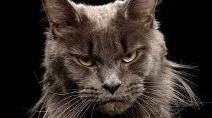
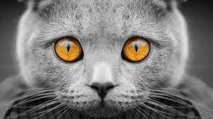
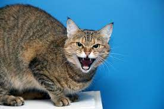

21 сентября 2021
Дачный сезон – несомненная радость как для нас, так и для наших питомцев. Многие кошки испытывают
удовольствие от смены обстановки, новых контактов и запахов. Наша задача – обеспечить безопасность питомцам
и поддержать их здоровье после возвращения в город. На улице кошки могут «подхватить» паразитов, которые
опасны для их здоровья. Многие паразиты оказывают негативное влияние на иммунитет животных, вызывают
Подробнее

10 августа 2021
Операции по кастрации и стерилизации «обросли» множеством мифов, которые зачастую не имеют ничего общего с
действительностью. Сегодня развенчаем эти мифы! Миф №1. Кастрированные животные всегда набирают лишний вес
Кастрированные животные действительно более склонны к набору лишнего веса, однако причина заключается не в
операции, а в изменении потребностей. Таким питомцам требуется меньше калорий, и
Подробнее

Как питание влияет на мочевыделительную систему кошки?
27 июля 2021
Мочевыделительная система необходима для фильтрации и выведения токсинов из организма. Если у питомца
возникают заболевания, то процессы выведения нарушаются – от этого страдает весь организм.
Заболевания мочевыделительной системы могут развиваться из-за:
- недостаточного потребления воды
- избыточного веса:
- малоподвижного образа жизни
- стресса и других причин
С помощью правильно подобранного питания в мочевыделительной системе можно создать среду, в которой
снижается
вероятность образования камней. Кроме того, правильно подобранное и сбалансированное питание может снизить
риск
набора лишнего веса, увеличить частоту мочеиспускания, которое необходимо для профилактики заболеваний
мочевыделительной системы.
Влажный корм содержит большое количество воды, что способствует более частому мочеиспусканию, поэтому
влажные
корма также стоит добавлять в рацион.
ROYAL CANIN® разработал широкую гамму продуктов для животных с различными особенностями. Линейка ROYAL
CANIN®
Breed Health Nutrition создана специально для кошек разных пород,
Indoor – для питомцев, живущих в помещении,
а
Sterilised – для удовлетворения
потребностей котов и кошек после кастрации/стерилизации. Стоит отдельно отметить, что все перечисленные
рационы
подходят для кастрированных питомцев.